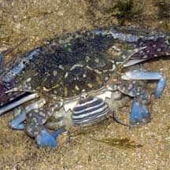
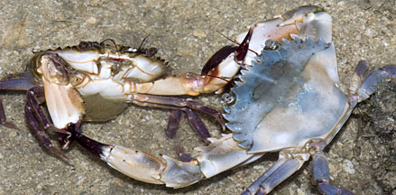
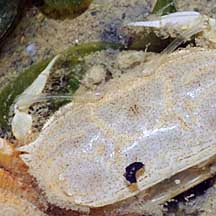
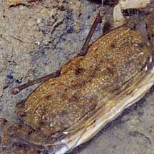

|
|
| crustacea text index | photo index |
| Phylum Arthropoda | Subphylum Crustacea |
| About
moulting updated Dec 2019
Why are there so many 'dead' crabs? You might come across what appears to be dead crabs strewn among the seagrass or on the sand bars. These are often not dead crabs but merely their discarded skins! Like other arthropods, crabs have a hard exoskeleton (external skeleton) and need to shed their exoskeleton in order to grow bigger. Called moulting, this also allows the crab to regenerate lost limbs. The description of moulting below generally also applies to other crustaceans. Double skinned: The exoskeleton is produced by the tissue layer under it. In preparation for a moult, the tissue layer separates from the exoskeleton and starts to produce a new exoskeleton. The old exoskeleton is also partially broken down from the inside and minerals from the old exoskeleton such as calcium are recovered and used to build the new one. Thus, close to moulting, the crab is encased in a double exoskeleton! Bursting out: When the new exoskeleton is ready, the crab swallows water to expand its tissues and the old exoskeleton splits along predetermined lines, usually near the abdomen. The crab then pulls out of the split, slowly and carefully so it does not tear any limbs. When it emerges, its new exoskeleton is soft and wrinkly. The crab continues to swallow a lot of water to stretch the new exoskeleton. When the new exoskeleton hardens in a few hours, there is space in the new exoskeleton for the crab to grow. Moulting thus makes the crab 'watery' and less valuable as food. The 'soft-shell crabs' that we eat are crabs that have just moulted! Since crabs are vulnerable during moulting, they usually find a safe place to hide during this time. |
 A freshly moulted crab (top right) with the moult (lower left). Sentosa, Jul 04 |
 The moulted exoskeleton 'opened' up. Changi, Jun 05 |
 Sea slater just moulted. Pulau Sekudu, Jul 20 |
| Happy moult day! Moulting is an
important milestone in the life of most arthropods including crustaceans
like crabs. As a crab develops from the larval stage, it changes its
body shape with each moult. Some of the shape changes can be very
drastic. Much like the way caterpillars moult to develop into the
pupae and moult into a butterfly. The crab reaches reproductive maturity when it emerges from a moult with functioning reproductive organs. Unlike insects, some crabs continue to moult after achieving reproductive maturity. But the time between moults becomes longer as the animal gets older. Some crabs, however, stop moulting once they reach reproductive maturity. New limbs: To replace a lost limb, a new one develops under the old exoskeleton and unfolds from a sac at the time of moulting. At this moult, the new limb is usually not as large as the lost one. It will gradually grow bigger with subsequent moults. |
 Flower crabs mating. Male inserting sperm into the female which may store it. Pulau Sekudu, Oct 05 |
 A
female already carrying eggs under her belly, about to mate.
Pulau Sekudu, May 04 |
|
| Moult 'n' mate: In some crabs, mating takes place just after the female moults. Thus, often the male crab will 'protect' a female that is just about to moult in order to ensure that he is the one to mate with her. She is able to store his sperm, some for quite a long time, and use the sperm to fertilise her eggs when she develops them. Older female crabs may have to mate again to fertilise her eggs when her stored sperm is depleted. |
|
 A hermit crab moult outside the shell with the original inhabitant inside the shell. Changi, Jul 05 |
 The eyes of the moult are transparent. Changi, Jul 05 |
 A newly moulted Sentinel crab. Pasir Ris, Dec 08 |
 The moult has transparent eyes, the eye stalks are transparent too! |
 This is the crab in its new exoskeleton. |
 |
References
|